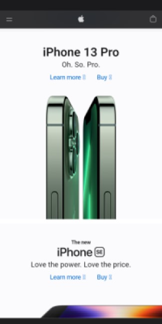
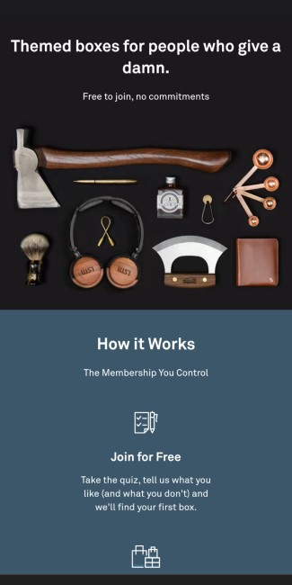
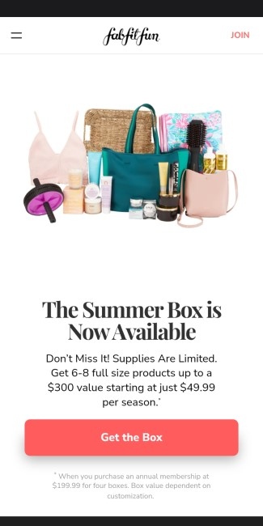

Hick's Law
Apple
apple.com

Apple's Home page presents user's with essentially 3 choices; "Learn More", "Buy", or scroll to the next product.
Generally only one product is shown on the screen at the time making the decision even easier.
It doesn't take long for the user to decide which link they're going to follow.
White Space & Clean Design
Bespoke Post
bespokepost.com

The use of whitespace by Bespoke Post creates a feeling of organization and sophisticaiton.
The minimalistic design of the site makes the content easy to find and read. The purpose of the site is clear.
Fitt's Law
FabFitFun
fabfitfun.com

The button, "Get the Box", spans the width of the screen and was placed right where my thumb
naturally falls when using my mobile devices. The size of the button and it's placement accomodate
a range of hand sizes and screen sizes making it easy to reach for any user on any device.